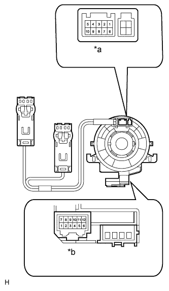

DTC B2660 Steering Wheel Switch Malfunction |
| DTC Code | DTC Detection Condition | Trouble Area |
| B2660 | The driving support switch control ECU detects a malfunction in the steering pad switch. |
|
| 1.READ VALUE USING INTELLIGENT TESTER |
Operate the intelligent tester according to the display and select the Data List (Click here).
| Tester Display | Measurement Item/Range | Normal Condition | Diagnostic Note |
| Steering Wheel Menu Switch | MENU switch/OFF or ON | OFF: MENU switch off | - |
| ON: MENU switch on | |||
| Steering Wheel Enter Switch | ENTER switch/OFF or ON | OFF: ENTER switch off | - |
| ON: ENTER switch on | |||
| Steering Wheel Up Switch | UP/DOWN UP switch/OFF or ON | OFF: UP/DOWN UP switch off | - |
| ON: UP/DOWN UP switch on | |||
| Steering Wheel Down Switch | UP/DOWN DOWN switch/OFF or ON | OFF: UP/DOWN DOWN switch off | - |
| ON: UP/DOWN DOWN switch on |
|
| ||||
| OK | ||
| ||
| 2.INSPECT STEERING PAD SWITCH ASSEMBLY |
Remove the steering pad switch assembly (Click here).
Measure the resistance according to the value(s) in the table below.
| *1 | MENU switch | *2 | ENTER switch |
| *3 | UP/DOWN UP switch | *4 | UP/DOWN DOWN switch |
| *a | Front view of wire harness connector (to Spiral Cable Sub-assembly) | - | - |
| Tester Connection | Switch Condition | Specified Condition |
| z8-2 (DISP) - z8-3 (GND1) | MENU switch pushed | Below 2.5 Ω |
| ENTER switch pushed | 313 to 346 Ω | |
| UP/DOWN UP switch pushed | 2955 to 3266 Ω | |
| UP/DOWN DOWN switch pushed | 950 to 1050 Ω | |
| All switches off | 95 to 105 kΩ |
|
| ||||
| OK | |
| 3.INSPECT HARNESS AND CONNECTOR (SPIRAL CABLE - DRIVING SUPPORT SWITCH CONTROL ECU) |
Disconnect the G60 driving support switch control ECU connector.
Disconnect the G28 spiral cable connector.
Measure the resistance according to the value(s) in the table below.
| Tester Connection | Condition | Specified Condition |
| G28-9 (DISP) - G60-3 (SWI1) | Always | Below 1 Ω |
| G28-10 (GND1) - G60-4 (SWI2) | Always | Below 1 Ω |
| G28-9 (DISP) - G28-2 (ECC) | Always | 10 kΩ or higher |
| G28-9 (DISP) - G28-4 (EAU) | Always | 10 kΩ or higher |
| G28-9 (DISP) - G28-10 (GND1) | Always | 10 kΩ or higher |
| G28-9 (DISP) - Body ground | Always | 10 kΩ or higher |
| G28-10 (GND1) - Body ground | Always | 10 kΩ or higher |
|
| ||||
| OK | |
| 4.INSPECT SPIRAL CABLE SUB-ASSEMBLY |
|  |
Set the spiral cable to the center position (Click here).
Measure the resistance according to the value(s) in the table below.
| Tester Connection | Condition | Specified Condition |
| A-2 - B-9 | Always | Below 1 Ω |
| A-3 - B-10 | Always | Below 1 Ω |
| A-2 - A-3 | Always | 10 kΩ or higher |
| A-2 - A-6 | Always | 10 kΩ or higher |
| A-2 - A-8 | Always | 10 kΩ or higher |
| A-2 - Body ground | Always | 10 kΩ or higher |
| A-3 - Body ground | Always | 10 kΩ or higher |
| *a | Connector A |
| *b | Connector B |
|
| ||||
| OK | ||
| ||